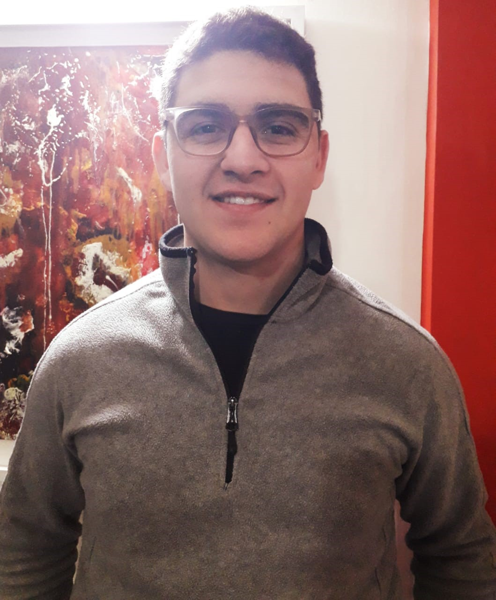

EXERIENCIA LABORAL
2016/ Actualidad - O.E.C - Odebrecht Ingeniería & Construcción
Administración Y SSGG.
En OEC, Admin. y Serv Grales comprende las tareas de un auxiliar administrativo tales como la manipulación de documentos y sistemas corporativos, proporcionando los servicios que requiera el Centro en materia de comunicaciones, transporte, correspondencia, archivo, mensajería y el suministro de mantenimiento preventivo.
Referencias:
Pablo Falvino - Gte Administracion y Finanzas OEC
Tel: +54 9 11 2659-6751
2014/ 2016 - My Service – Servicios Electricos y Afines
Encargado de Compras
Organizando comparativas, Planificando Compras y ocacionalmente Ayudando al oficial con el cableado, montaje de cajas, caños y las terminaciones e iluminación en obras en construcción domicilios y locales.
Referencias:
Miguel Angel Caputo. Tel: +54 9 351 559-8668
FORMACIÓN
Secundario Completo
I.P.E.M. Nº 88 MERCEDES SAN MARTIN de BALCARCE - CAPILLA del MONTE.
Orientación: Turismo Hotelería y Transporte.
CONTACTO
Instructorado
Capacitaciones
Capacitacion en conduccion defensiva - Dictado por TARGET Argentina.
Capacitacion sobre “Politicas de Conformidad e introduccion al Compliance
Instructorado
Karate Do - 1st Dan
Asociacion E. Shotokan - AES - Argentina
Aval:
Japan Karate Association - JKA

ANGEL ISMAEL CAPUTO
- DNI: 37872501
- CUIL: 20-37872501-2
- EDAD: 25 AÑOS
- F. DE NAC: 24/05/1994
- Disp. Horaria F. time
CONTACTO
+54 9 354 861-5265 -
+54 9 351 701-0065

Isma_caputo@hotmail.com
San Antonio 935. Dpto. “A”
B° Res. Velez Sarsfield - Cordoba.
CP 5016